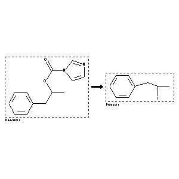

|  |
| FA | RX(1); FLST(1); RX(1) |
Reaction (1 of 1)
| Reaction ID | 3126919 |
| Reactant BRN | 5538105 |
| Reactant | imidazole-1-carboxylic acid 1-methyl-2-phenyl-ethyl ester |
| Product BRN | 1931248 |
| Product | (2-iodo-propyl)-benzene |
| No. of Reaction Details | 1 |
Reaction Details (1 of 1)
| Reaction Classification | Preparation |
| Yield | 80 percent (BRN=1931248) |
| Reagent | methyl iodide |
| Solvent | acetonitrile |
| Time | 3 hour(s) |
| Other Conditions | Heating |
| Citation Pointer | 5669232; Journal; Kamijo, Tetsuhide; Harada, Hiromu; Iizuka, Kinji; CPBTAL; Chem.Pharm.Bull.; EN; 31; 11; 1983; 4189-4192; |
Reference (1 of 1)
| Citation Number | 5669232 |
| Document Type | Journal |
| Authors | Kamijo, Tetsuhide; Harada, Hiromu; Iizuka, Kinji |
| CODEN | CPBTAL |
| Journal Title | Chem.Pharm.Bull. |
| Language Code | EN |
| (Series) Volume | 31 |
| Number | 11 |
| Publication Year | 1983 |
| Page | 4189-4192 |